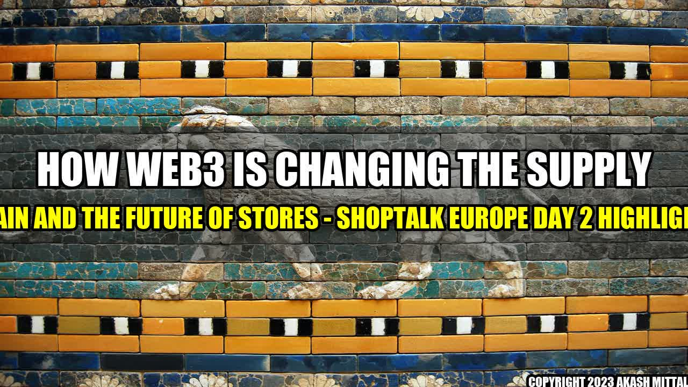

How Web3 is Changing the Supply Chain and the Future of Stores

Imagine a world where you don't have to worry about product authenticity, supply chain transparency, or delivery delays. What if you could track your product from the manufacturer to the store shelf, with all the details and data available in real-time?
This is the promise of Web3, a decentralized web that uses blockchain technology to create a more secure, transparent, and efficient internet. And it's not just a pipe dream – it's happening right now.
The Story: Blockchain for Product Authenticity
Imagine you're a luxury goods company, and you've received a batch of handbags from a manufacturer in Italy. You want to ensure the authenticity of these handbags, but how can you do that?
Traditionally, you would rely on certificates of authenticity, which can be forged or lost. But with blockchain technology, you can create a unique digital signature for each handbag, which is stored in a secure, decentralized ledger. This signature cannot be tampered with or duplicated, which means you can guarantee the authenticity of your products.
- Walmart: Walmart has been using blockchain technology to track pork from China to stores in the US, reducing the time it takes to track the origin of the pork from seven days to 2.2 seconds.
- Nestle: Nestle has been using blockchain technology to track the origin of coffee beans from farmers in Columbia to stores in Japan, improving transparency and sustainability.
- Maersk: Maersk, the world's largest container shipping company, has been using blockchain technology to track shipments of avocados from Kenya to the Netherlands, reducing paperwork and delays.
The
Web3 and Blockchain: The Future of Transparency and Efficiency in the Supply Chain
The Future of Stores: Three Points to Consider
- Increased Transparency: With blockchain technology, it's possible to track every step of the supply chain, from raw materials to finished products. This creates a more transparent and trustworthy system, which can help to improve customer trust and confidence.
- Streamlined Processes: Traditional supply chain processes can be slow and cumbersome, with plenty of paperwork and manual input required. With blockchain technology, these processes can be automated, reducing delays and errors. This can help to create a more efficient and cost-effective supply chain.
- Better Product Quality: By tracking the origin of raw materials and ingredients, it's possible to ensure that they meet certain quality standards. This can help to improve the overall quality of products, leading to better customer satisfaction and loyalty.
and Case Studies
One of the speakers at Shoptalk Europe was the founder of a startup that uses blockchain technology to track the origin of diamonds. He shared a personal anecdote about the challenges of ensuring the authenticity of diamonds, and how his company is using blockchain technology to create a more transparent and trustworthy system. He also shared a case study about a customer who had purchased a diamond from a competitor, but then discovered that it was a fake. The customer then turned to the startup's blockchain technology to ensure the authenticity of the diamond, and was impressed by the level of transparency and trustworthiness.
Practical Tips
- Consider using blockchain technology: If you're involved in the supply chain, consider whether blockchain technology could help to improve the transparency, efficiency, or quality of your products.
- Invest in training: Blockchain technology is still relatively new, and many people may not understand how it works or how to use it. Investing in training can help to ensure that your team is comfortable using the technology, and can maximize its potential.
- Think about the long-term benefits: While blockchain technology may require an initial investment, it has the potential to create long-term benefits for your business and your customers. Consider the potential savings, efficiencies, and customer trust that could result from using blockchain technology in your supply chain.
References and Hashtags
Akash Mittal Tech Article
Share on Twitter Share on LinkedIn